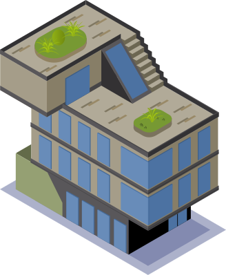
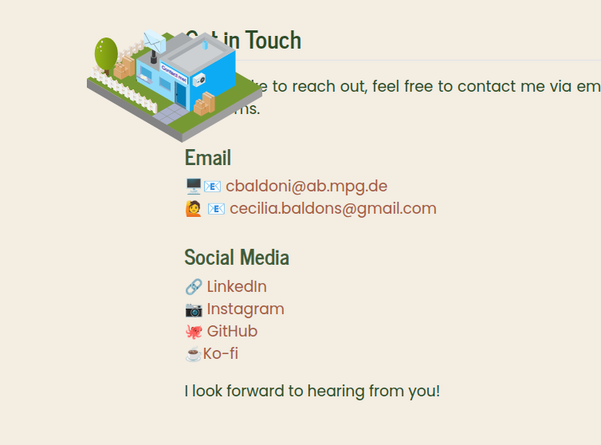
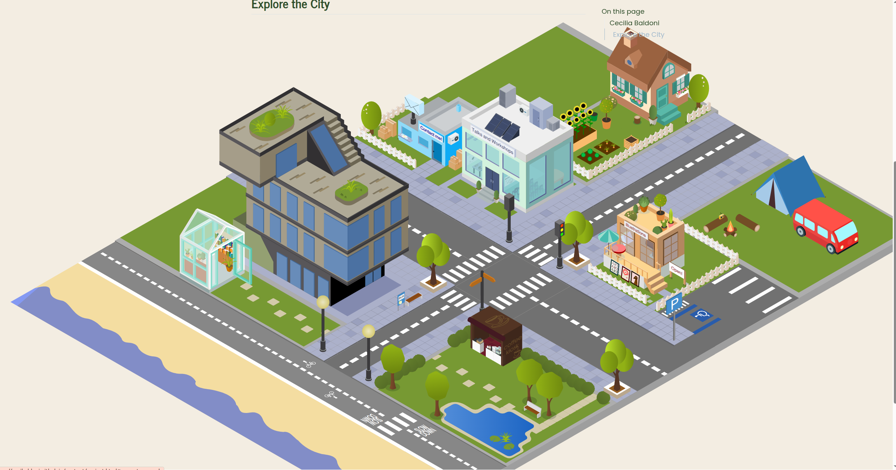
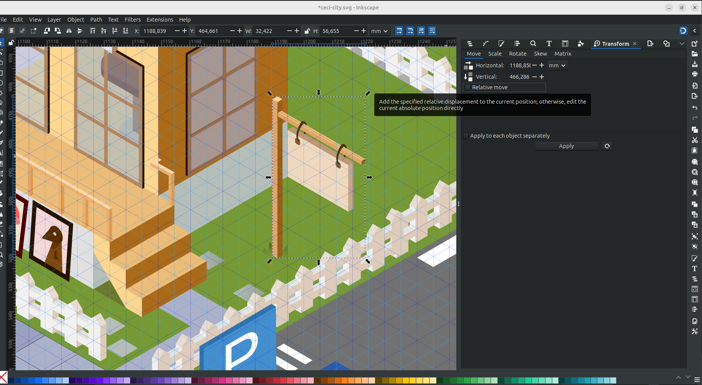
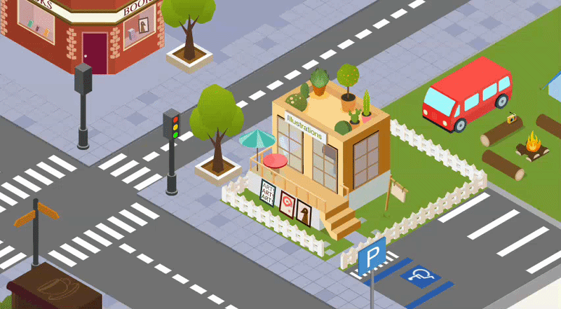
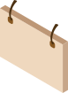
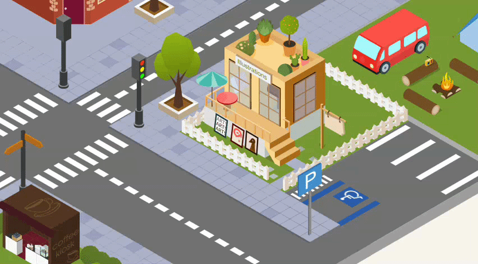

# canvas size from Inkscape - find it in "Document Properties"
canvas_width <- 5989.414
canvas_height <- 3718.340
# icons positions and sizes
# X and Y are in the move tab in "Transform"
# Width is in the scale tab, but resize to 100% before checking the width in px
icons <- list(
contact = list(x = 2254.204, y = 679.325, w = 983.975), # here they should be DOTS, not commas. Trust me, I learned the hard way.
research = list(x = 1561.630, y = 732.550, w = 1240.664)
# ...one entry per building
)The messy city on my homepage
infographic
There was one building, and suddenly a lot of buildings.
If you’ve landed on my homepage, you’ve met the city.
It’s an illustrated Cozy Ceci City where each building is a different part of what I do, and by extension what the website has to offer. People, including complete strangers, ask me about it fairly often. The most asked question is always a variation along the theme of “how did you do this” (with do often interchanged with plan, but joke’s on them because I never planned anything).
I never kept a journal of how this thing came together, which is a slightly embarrassing admission so I will take no more questions, thank you. I do have a fairly good memory of what happened when, or so I think. The good news is that everything was recorded through the magical system of commit history of this website’s repository, which helped me reconstruct a tidier story. But just for safety let me say this: my commit messages from over a year ago are not written for an audience, and were not planned to be, so I apologize in advance.
What follows is what the log actually shows, updated in a couple of places by what I remember, and by what the illustration process was (which unfortunately does not have a commit history).
Enjoy!
One building, twice redone
The first icon I ever made for this project was the research building (later on it got renamed into Projects, but the link was going to Shrews).

If you squint, it’s modeled on the real building of the Max Planck Institute of Animal Behaviour, where I worked for more than six years. At the time I drew it, there was no city and no plan for one.
It’s also the only icon in the whole city modeled from somewhere real, which is probably why it took foooreveeer.
I’m unfair, it took forever because it was my first ever isometric project in Inkscape. I learned by doing, and I made a lot of mistakes that I would not do today. One of those is starting it with my graphic tablet, instead of a mouse (I can’t stress it enough, don’t!). The second mistake was not to save. Often. My hope is that a word to the wise is enough on this topic.
Whatever the first two attempts looked like, though, I couldn’t tell you even if I wanted to. What I can remember is that I was trying to either fitting the windows in the isometric lines, which made them look very squared, or have them look like windows but eyeballing the size of each one. The solution is, as most times is, do it once, and DUPLICATE. Once again, I am embarassed to tell you how long it took me to have that epiphany. (But as a wise person once said ‘An epophany is only an elaborate way to say that you’re an idiot’).
These mistakes were long and tedious, but fixable. Later mistakes weren’t so lucky, like the one you’re about to see.
The jump to a city
The actual starting goal was smaller than a city. I wanted an icon for each of my own .qmd pages, Projects included, sitting at the top of its page the way a small drawing sits next to a chapter title.

Somewhere in the couple of weeks after Projects was finally done, the goal escalated.
Twice.
First: what if the homepage itself had one interactive element, something you could actually click, instead of boring text and links?
Then, almost immediately after: what if that element wasn’t one thing at all, but tiny buildings, a whole city, one per part of what I do?!
Please, imagine this thought by a mad scientist gone rogue. Because that is what felt like to me. So from “icon for a page” to “let’s have some cool interactivity” to “let’s build a ducking village, let’s gooooo” in a couple of weeks. It’s either commitment or madness or both.
None of that shows up in the git log, and it took me a while to understand that’s because my most ambitious projects creep entirely offline (that’s a lietmotiv). By the time I committed anything the decision had already been made and fully executed.
The very first commit to touch any of this, back in March 2025, already contains six finished buildings and the entire background underneath them: contact, home, illustrations, open science, talks and workshops, and research.
Nine days later, every building and the whole background got rewritten in a single commit. What actually surprises me, looking back at it now, is that I took time to make my village nice! I added benches, streetlamps, a bus stop, trees… A whole sheet of texture that hadn’t existed on day one.
I don’t remember deciding the place needed personality. What I do remember is where the idea came from: the Max Planck Society’s own website, an illustrated city where different buildings point at different institutes and programmes. I loved it, and I WANTED IT. So I made my own version of it.
What the log actually shows
The goal, once it existed, was simple: a homepage where every part of what I do gets its own building, and clicking one takes you to the real page behind it. Straightforward.
Everything after that sentence was execution, and the execution is where over a year of small, big, occasionally embarrassing mistakes actually live, starting with the size of the canvas.
That number changed three separate times as the artwork grew: starting at roughly 4715 by 2824 pixels when the city was born, then 5754 by 3235 nine days later, then 5989 by 3508 about six months after that, and finally 5989 by 3718 eight months after that, where it still sits.
Every single time the canvas size changed, every single icon’s recorded position had to be recalculated, because a position that’s correct against one canvas size is wrong against another.
Of course it is, and of course it sounds incredibly logical. I cannot tell you how long it took for me to realize that I needed a system for it, and not just a swing, a calculator, and a prayer. Because scss is not forgiving. More on this topic in the next section.
The six-months-later (the-one-before-the-last) resize came bundled with some cleanup, which is a generous way of saying “I found things that had been broken for months and fixed (hopefully all of) them”. That commit deleted a Google Scholar scraping script that had been sitting inside the same file for who knows how long, doing who knows what, and fixed a run of typos scattered through the icon coordinates, where commas had crept in where periods should be (TL;DR: Inkscape reads its numbers out with a comma. R wants a dot. Don’t ask me who is right because I don’t care).
Three days after that came a commit called, without further explanation, “fixed city image”. This is another lietmotiv of mine: despite teaching others how to use git and that they should write better commit messages, my git history is a horror movie. I literally have a commit somewhere called, I kid you not, AAARGH typos (which, in my defence, is pretty self explanatory!).
Anyway, I expected to find a complete rewrite with no explanation and found about fifteen lines changed in each direction, so quite a small fix (pfiuu).
The real rewrite happened two days later: a pier appeared, the talks and workshops icon got redrawn alongside it, and the change was big enough to touch close to four and a half thousand lines across both files. I have exactly one screenshot from around this period, taken while reordering icons after adding a publications page, and in it the beach is still bare: no pier, no umbrellas, nothing but sand. I can’t tell you from the commit message what was specifically wrong with the version before the rewrite, only that whatever existed wasn’t good enough to keep. I know what you’re thinking and I agree: two days is not a long gestation period for a decision like that.
None of this was the end of it, either. A van showed up about six weeks after the big rewrite, to give the blog its own space. A coffee kiosk arrived about three weeks after the pier, so people booking time to chat with me would have somewhere to click. A bookshop and a radio tower joined the following spring, for publications and media, and the canvas got resized one final time to make room. The city has never really stopped growing since the day it first existed as six buildings and a background.

Writing all of this in (almost) one sitting was a strange experience, because it’s the closest thing I have to a diary of a project I never actually kept a diary of. Instead of dated entries about how I felt, I have terse commit messages and diff sizes, and I have to reconstruct the feeling from the size of the rewrite.
This reads like a thing written by someone who apparently cannot be trusted to remember the order it happened without a log to check. And that’s the truth.
How the icons actually line up
The two questions people ask most, once they’re done asking whether the city is a single drawing (it is, it’s one Inkscape file, everything else layers on top of it), are some version of: how do the icons sit on the background so precisely, and did you do that by hand.
The mechanism is simpler than it looks, but it took some time and many canvas resizes for me to realize that ‘there must be a better way’.
Let’s go to the basics. Each icon needs three numbers to sit correctly: its horizontal position, its vertical position, and its width (how big it is agains the background). All this information you can find directly in Inkscape (or your software of choice). Once resized to 100% so the width reading is accurate, those numbers get logged for every icon, alongside the total width and height of the canvas itself, in a script called icon-position.R.
From there, the script converts each icon’s raw pixel position into a percentage of the canvas, and those percentages become plain CSS: top, left, and width for each icon, which makes it a breeze to put them exactly on top of the city background.
calc_css <- function(x, y, w) {
list(
top = round((y / canvas_height) * 100, 2),
left = round((x / canvas_width) * 100, 2),
width = round((w / canvas_width) * 100, 2)
)
}Working in percentages rather than raw pixels is the trick took me 5 resizes to get to. However large or small the city ends up being rendered on someone’s screen, phone or desktop, the icons scale together with the background instead doing each their own thing (guess how did I figure it out? By failing again and again), because every position is relative to the same canvas rather than fixed to an absolute pixel count.
The result of the code is something like this
> css_rules <- lapply(icons, function(pos) {
+ calc_css(pos$x, pos$y, pos$w)
+ })
> for (name in names(css_rules)) {
+ cat(sprintf(".icon-%s { top: %.2f%%; left: %.2f%%; width: %.2f%%;}\n",
+ gsub("_", "-", name),
+ css_rules[[name]]$top,
+ css_rules[[name]]$left,
+ css_rules[[name]]$width))
+ }
.icon-contact { top: 18.27%; left: 37.64%; width: 16.43%;}
.icon-home { top: 0.11%; left: 44.98%; width: 21.10%;}
.icon-talks-workshops { top: 6.41%; left: 62.85%; width: 15.72%;}
.icon-research { top: 19.70%; left: 26.07%; width: 20.71%;}
.icon-bookshop { top: 18.58%; left: 49.29%; width: 15.00%;}
...And these are simple css rules, that can be copy-pasted directly in the styling file (mine is called custom.scss, you can have a look at it here at your own risk, it’s a mess).
So the answer to “is it precise because you’re careful with a mouse” is “No, I’m never precise with a mouse”.
The most recent addition finally moves
I can’t walk you through the whole city, but I can walk you through this one small piece, start to finish.
I wanted something in this city to have animation, ever since the very first building went up, and had no idea how to make that happen. The Max Planck Society’s own city, the one that inspired this whole project, actually has moving elements on it. And they look SO COOL.
But now, I HAVE ONE TOO. Now the illustration icon/building has a banner, hanging off a plank, that actually swings.
Getting that one small swing to work took four separate wrong turns, and for once I have the receipts, because I was writing this post on the side and I could take good notes promptly, instead of reconstructing it later from a commit message written in a hurry. So I hope you enjoy it. And I promise I will take care of recording my future changes on the city.
Attempt 1: guess and hope
First pass, I made the banner. There was a previous version of it in the original illustration icon but I wanted an element that could swing, and the old one was too bulky. This took a surprisingly short amount of time (15-20 minutes) if you compare it to the whole week it took me to make the first icon. I finally feel like I am progressing at something!
Once it was existing, I exported it as a separate .SVG element and placed it where all the other icons live. The first thing whenever a new icon gets added, is to run the icon-position.R script, with the values from Inkscape.

The problem was that this step happened a bit later and I decided to update the css without doing this step:.icon-contact { top: 18.27%; left: 37.64%; width: 16.43%;}
.icon-home { top: 0.11%; left: 44.98%; width: 21.10%;}
.icon-talks-workshops { top: 6.41%; left: 62.85%; width: 15.72%;}
.icon-research { top: 19.70%; left: 26.07%; width: 20.71%;}
.icon-bookshop { top: 18.58%; left: 49.29%; width: 15.00%;}
.banner {top: 25%; left: 70%; width: 8%; }
Notice the random numbers? Not my finest hour.
Attempt 2: the wrong half of the drawing
I fixed the numbering and went back into Inkscape to recheck, on the theory that the commas were points and Snarks were Boojums. But all looked good. To make it swing, I then realised that the actual swinging part of the banner needed to be saved on its own, otherwise the whole object would swing.
When do you think I realised it? Yes, there was a moment where my website had a swinging post (banner and all).

Ok, the planck is the object to animate, and the banner-post must be part of the background.

Attempt 3: ask someone to actually look
The div still would not sit where the numbers said it should, and by this point I had read the same three lines of scss often enough that I could no longer see them. So I did what I do in these situations and I went crying to an LLM.
Ceci: “Why is the banner not moving? I don’t see it anywhere, where it is? All my scss code is perfect as you can see” Claude: “Well…”
Well, the truth is that years of coding in scss have taught me nothing on how scss works. The correct numbers was there, for real, but it was doing absolutely nothing, because a browser only obeys a position once an element is permitted to have one. The line that fixed it was: position: absolute;. I still have no idea what this lines mean, do not ask me. The banner now swung beautifully! And at the top of every swing, a second, perfectly static banner peeked out from underneath it. Damn it!

Attempt 4: remembering the layers
Remember when I said that the post had to be in the background, but not the swinging part?
Well, I forgot.
I kept the whole illustration in the background, and on top of it I added the moving planck. This meant that the swing movement would show the static background of the planck. Getting rid of it meant going back into the illustration artwork itself, which is where the day found a way to teach me the exact same lesson from the very first section of this post. I got absorbed, didn’t save for a while, and Inkscape froze solid.
I lost a genuinely upsetting amount of years from my life while I waited for Inkscape to come back to its senses, which it did. For the second occasion in this city’s entire history, I have apparently learned nothing at all from the first one, a major lost-city-rebranding disaster (yes, that happened, and no, today is not the day I tell that story). I am choosing to read that as consistency rather than as a character flaw.
I think of myself as an intermediate scss coder, which is another way of saying I have opinions about flexbox and no working mental model of what position: absolute actually does to an element’s coordinate system. I still don’t, despite all the hard learning I had to endure.
That’s apparently fine because the banner swings. Maybe the whole learning about this city is ‘don’t give up when it looks hard’, I don’t know. Right now the plank is the only thing in this whole city that moves. Let’s see in a year from now (I imagine a Godzilla coming in and destoying everything, like a sand castle you spent the whole day building).
Still not done
Buildings get constantly added or renewes, old icons get redrawn, the pier that showed up in October wasn’t there a few days earlier and won’t be the last addition either, I’m still thinking about coffee tables (who drinks a coffee standing up?). There’s no final version of this thing in sight, and that’s what I love about this project.
I hope you like this post, I really enjoyed writing it for you.